Sauce Labs Enterprise
Created by James Tacker
Using Reveal.js
Trainer Intro
James Tacker
Technical Trainer
M.A. Multimedia
Previous (and current) Work:
Atlassian
Salesforce
NGINX
New Relic
Configuring Sauce Connect ™
This section will cover Sauce labs tunneling app for secured network firewalls
Module Objectives
This module enables you to:
Identify purpose and use cases of Sauce Connect™
Setup and configure a single tunnel
Configure Sauce Connect with a proxy
Review security/networking protocols
In this section of the course, we're going to identify the use cases and functionality of the Sauce Connect feature, we're going to configure it, and also review some of the security and networking protocols that you should familiarize yourself with before attempting to setup this process.
Prequisites
Courses:
Selenium 101
Getting Started with Sauce Labs
Topics:
Sauce Labs Account
Creating a Manual Test
Sharing Test Results
Archiving Tests
Before we move any further, make sure that you've at least met most of the following milestones. This course assumes foundational knowledge in Selenium such as creating manual tests, sharing and archiving said tests, and also how to navigate the basics of the SauceLabs interface.
Sauce Connect Proxy™
Tunneling app that establishes a secure connection between local machine and Sauce Lab VM.
Sauce Connect Proxy™ is a tunneling VM service (proxy server) that allows you and your teams to securely test applications behind your firewall. Sauce Connect is technically not required to run tests with Sauce Labs unless the website or application is not publicly accessible. Sauce Labs recommend to enlist the aid of a network engineer to install Sauce Connect due to the complications of network architectures.
Download the Client
Download from the appropriate mirror . Then review your system requirements to ensure SC will work within your network.Follow enviornment guidelines listed here
Things to consider:
A reliable Network Connection
A dedicated server for testing
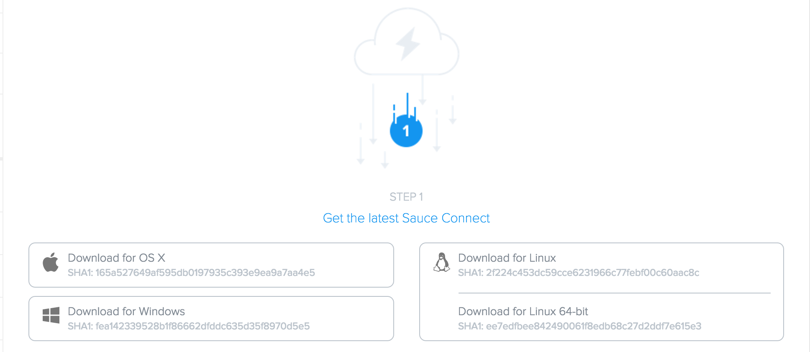
The first thing we need to do is to download the appropriate client package based on the operating system of the machine your running your tests from. When configuring Sauce Connect, it's important to consider the reliabilty of your Network Connection as well as the host machine that hosts the Sauce Connect Client. Ask yourself the questions: do you control that machine? Do you have the necessary permissions to install and manage the Sauce Connect client? So on and so forth... if not, again, consult with your IT department and Network admin to help through the process before indiscriminately launching tunnels.
Configure SC Client
Extract the file
$ tar -xvf sc-4.3.16-linux.tar.gz
Run SC Client with User and Access Key
$ bin/sc -u "user" -k "access_key"
After you've extracted and installed the client, you need to navigate to the folder where the client exists, and run the following commands: bin/sc -u for user and -k for access key. If this information isn't readily available, you can find it in your account info of your saucelabs.com account. (navigate to the SauceLabs.com account to show where it exists on the interface)
Run a Test
Run a manual test
Select the tunnel from the SC dropdown list
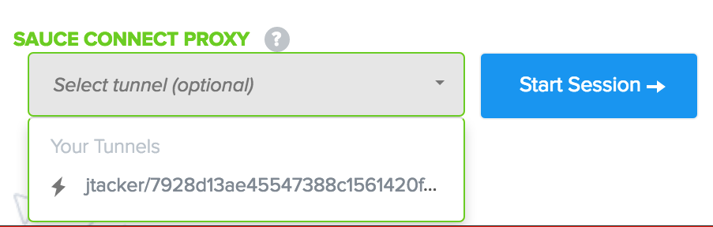Execute the test
Shutdown tunnel
We can execute a manual test after we configure SauceConnect client using the SauceLabs UI. First we go to the dropdown list in the section that reads "Sauce Connect Proxy." You'll notice that your tunnel options are limited to the amount of tunnel VMs currently running. Right now I have one here, but there are options to run concurrent tunnels, also known as tunnel pools... but we will cover that later. Tunnels are indicated by green lightening bolts, the green color is most likely influenced by the green encrypted SSL lock icon in front of an HTTPS browser connection or perhaps green most-likely abates any emotional fears revolving around security. Either way it makes the location of the tunnel options easy to find and it's specifically located at the bottom of your test configuration screen
Monitoring Tunnels
Choose the "Tunnels" tab to view "Active Tunnels" Display is list format with Session ID and Host
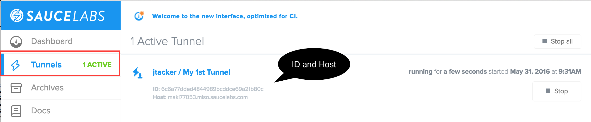
When you choose the "tunnels" tab in the "active tunnels" tab in the SauceLabs UI, what you're actually looking at is the tunnel VM that was spun up by your SauceLab client. These Vms are emphemeral by nature, meaning once the test is completed, the Sauce Connect Client will execute a teardown proccess that will gracefully shut these VMs down. The Tunnel Vms are represented in this tab by their Session IDs and Host ID
Complete Test
Tests using Sauce Connect will show a green lightning bolt
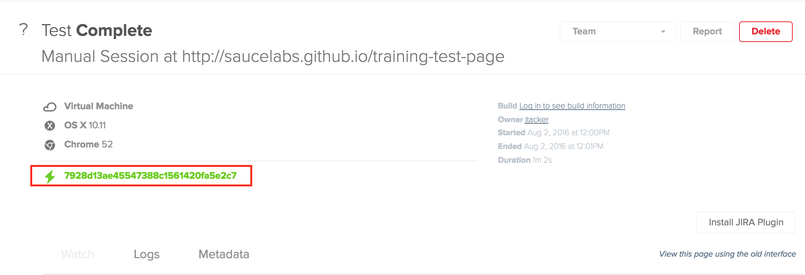
Once the test is complete you can confirm the test ran through a tunnel as indicated by the green tunnel VM id.
Sauce Connect Launcher
Use Sauce Connect browser plugin (Firefox only) to invoke methods in browser.
Download client
Install Sauce Connect Add-On
Launch a Tunnel
There is also the option to configure the SC launcher as a browser add-on so that you can launch tunnel VMs through your Firefox browser rather than a client.
Configure the Add-on
In Firefox, Tools> Add-Ons > Extensions
Choose "Preferences"
Enter Sauce login credentials when prompted
Set the id of in "Tunnel" tab
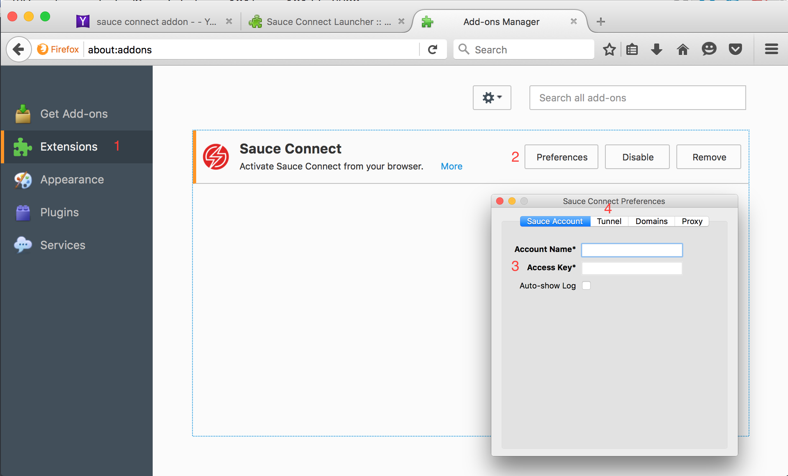
To configure the add-on make sure you download it from the Extensions manager, then when prompted, enter your SauceLabs User and Authentication Key. Then you can set the ID of your tunnels
Launch a Sauce Connect Tunnel
Choose Tools > Web Developer > Launch SC
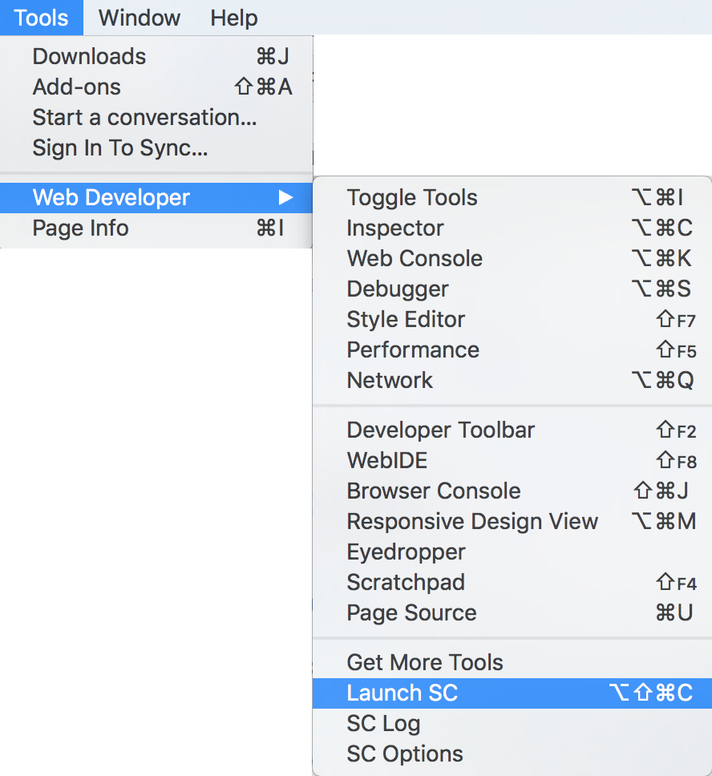
After you set the details of your tunnel, you can launch it from your browser tool window, and your tunnel VM will reflect in SauceLabs.com when you select your Sauce Connect Proxy tunnel
Sauce Connect Proxy
There are two proxying scenarios where additional configuration is needed for Sauce Connect to work:
SUT Behind a Proxy
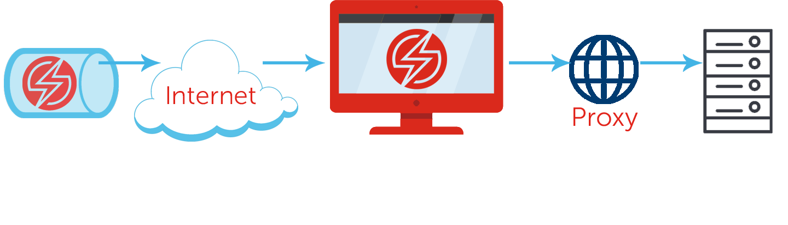
SC Behind a Proxy
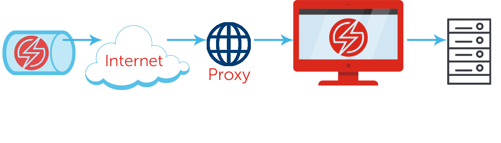
Previously we used a simple Sauce Connect tunnel, but when we refer to Sauce Connect Proxy it still implies the usage of a tunnel. The key difference is the existence of a proxy either in front of the site under test, or in front of the host machine of the Sauce Connect client. If either of these two use cases are present, we need additional configuration for the tunnel VM to communicate through the network layers and establish a reliable connection to your SUT.
Proxy Configuration
Command line options for configuring proxies:
-p # (short)
--proxy # (long) host:port
-w # (short)
--proxy-userpwd # (long) user:pwd
-T # (short)
--proxy-tunnel # (long) deploy tunnel
--pac # url Linux/Mac OS X example:
./sc -u USERNAME -k ACCESS_KEY --proxy host:port --proxy-tunnel
The most important thing to understand about setting up Sauce Connect Proxy is that while it doesn't need to be set up on the same machine as the site or application you're testing, it must be on the same network. Generally, Sauce Connect makes two separate outbound connections for two separate purposes.
The first, which -p, --proxy uses, is a lightweight connection to the Sauce REST API that forwards servers basic information about theSauce Connect Proxy status (for example, starting up, ready, stopping etc).
The second connection is to the actual tunnel VM created for your Sauce Connect instance.
Enabling the -T, --proxy-tunnel flag will instruct the SauceConnect connection to proxy through a tunnel using the specified host and port that you defined with -p, --proxy flag. But be aware that since the Sauce Connect proxy is already TLS secured, and a large volume of data tends to go over this connection, Adding an additonal step in the middle of the connection in the form of a proxy, can affect test performance.
Normally you should only need to use -p, --proxy (and perhaps -w, --proxy-userpwd for credentials), but the use case for the -T, --proxy-tunnel is if your network doesn't allow outgoing connections on port 443. If your tests are slow, check with your network administrator about adding network or firewall exception rules for these connections.
And finally the pac command enables automatic proxy configuration for any urls or files that specific in your pre-test settings.
Automatic Proxy Configuration
Automatically configured based on OS settings
Windows: IE and system-wide settings
Max OSX: Prefrences/Network
Linux: .env variables:
http_proxy
HTTP_PROXY
all_proxy
ALL_PROXY # http://host.name.port || host.name.port Disable proxy detection with:
As of Sauce Connect 4.3.1, proxies and PAC settings are autoconfigured based on the settings of the operating system on the machine where it is installed.
On Windows, Sauce Connect will use the proxy settings for Internet Explorer, as well as the system-wide proxy settings that set in the Control Panel.
On Mac OS X, Sauce Connect will use the proxy settings in Preferences/Network. Both proxy and PAC settings are supported.
On Linux, Sauce Connect looks for these environment variables, in this order:
http_proxy
HTTP_PROXY
all_proxy
ALL_PROXY. They can be in the form http://host.name:port or host.name:port.
You can disable automatic proxy detection with the command line option ./sc -z --no-autodetect.
Additional Options
--verbose #(long)
-v #(short flag)
--tunnel-domains "url" #e.g. mydomain.com,saucelabs.com,mysite.com
--tunnel-identifier "id"
Enable verbose debugging if you find the tunnel vm spinup process to be too quiet for liking and you want to see the actually handshake and connection processes. -vv will output HTTP headers and --tunnel-domians will only requests for domains in the list being sent through the Sauce Connect tunnel. Tunnel Identifiers: Assign id to specific Sauce Connect instance. Future jobs will use this tunnel only when explicitly specified by the tunnel-identifier DesiredCapability in a Selenium client. We will cover this more in the upcoming parralelization section of sauce connect test Configuration Options and more information about the syntax for setting tunnel-identifier as a DesiredCapability. And finally you can create a BrowserMob configuration to handle these connection level details but we don't cover that extensively in this course, so for more information click on the link here and it will re-direct you to the docs with a step by step instrucitons
High Availibility Configuration
Use Cases
Parallel Tests
Non-interrupted Tests
Rolling Restarts
As mentioned earlier, it's possible to spin up a pool of Tunnel VMs, it's especially useful if you:
Use high concurrency (run more than 200 jobs in parallel), since tunnel resource usage (memory, CPU) is limited on the Sauce Labs side.
Use a Highly Available Sauce Connect setup. Sauce Connect instance, or tunnel VM instance going down won't affect tests.
Use rolling restarts of Sauce Connect. In this case, you can start a new tunnel instance which new tests will start using, and shut down your "old" Sauce Connect instance gracefully without interruptions.
HA Logic Flow
Allows for multiple routes
Protection from route failures
Load Balances traffic
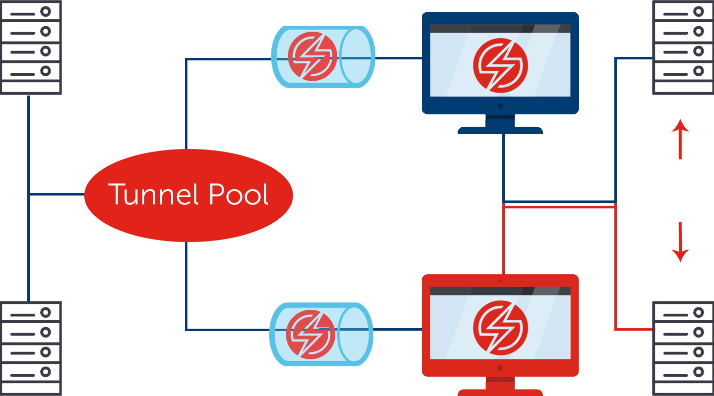
In this diagram, we see a setup that allows for multiple network routes when reaching the site(s) under test. There are variations to this of course, for example some of the Sauce Connect instances could be in the same network infrastructure as the site(s) under test. You can also imagine leveraging different virtual routes inside the same physical network. What is gained by setting up tunnels in this manner is redundancy and failovers for Sauce Connect Proxy should one network route fail for example.
High Availability Settings
--tunnel-identifier # set ids for tunnels
--no-remove-colliding-tunnels # enables "pool" of tunnels
--wait-tunnel-shutdown # wait for all active jobs
Assign
--tunnel-identifier will set id to the tunnel VMs specific to the Sauce Connect instance. Future jobs will use this tunnel only when specified by this flag which we set in the DesiredCapability of a Selenium client.
the --no-remove-colliding-tunnels flag tells Sauce Connect to not remove identified tunnels with the same name, or any other default tunnels if this is a default tunnel. Jobs will be distributed between these tunnels, enabling load balancing and high availability. If we don't specify this flag colliding tunnels are removed by default.
--wait-tunnel-shutdown waits for all active jobs using the tunnel to finish. By default, Sauce Connect will terminate the tunnel even when there are active jobs. This is one way to ensure all tasks complete gracefully before the teardown process begins
Running Multiple SC Tunnels
Creating unique tunnel identifiers can help manage the tunnel instances
Use Cases:
Run different tunnels for local virutal/metal machine and/or CI server
Multiple, concurrent Jobs on the same CI server
If you're implementing a tunnel pool as part of your existing setup or as part of your continuous integration platform, make sure you set tunnel identifiers to manage those instances and also to provide visibility. This way you can set multiple concurrent jobs with similar or the exact same names reflected in your local or CI builds
Sauce Connect Pool Setup
A "pool" of tunnels is a grouping of multiple SC tunnels acting as one tunnel
Creating multiple tunnels with the same identifiers to manage the tunnel instances will cause problems unless the -no-remove-colliding-tunnels is enabled
One important note to remember when configuring your pool, because what we're essentially doing is spinning up duplicate tunnel vms with similar or same IDs we need to add the -no-remove-colliding-tunnels to our proxy configurations so that our SUT or firewall rules allow the connections instead of throwing back 400 or 500 HTTP response codes.
High Availability Example
#Linux or Mac OSX
./sc -u YOUR_USERNAME -k YOUR_ACCESS_KEY --tunnel-identifier myTunnel --no-remove-colliding-tunnels --wait-tunnel-shutdown
#Windows
sc.exe -u YOUR_USERNAME -k YOUR_ACCESS_KEY --tunnel-identifier myTunnel --no-remove-colliding-tunnels --wait-tunnel-shutdown
We can start Sauce Connect from the command line with these commands in order to set up Sauce Connect Proxy with High Availability. However you need to run this command on each machine that you want to have access to the tunnel pool. (ask Kevin and neil if it's possible to include this step as part of a pre-run executable or even somehow include this configuration as a build process in the CI/CD process to help speed up the launch cycle of tunnels?)
Maven Plug-In
Programatically invoke Sauce Connect processes.
Pull or clone project from GitHub© repo
Add the script to your pom.xml file
Invoke the following methods:
start-sauceconnect # invokes a process
stop-sauceconnect # stops a processWith the following parameters:
sauceUsername (mandatory) # user
sauceAccessKey (mandatory) # access key
port # port
httpsProtocol # protocol
Jenkins Plug-In
Sauce Connect can leverage Jenkins CI/CD pipeline using Sauce OnDemand CI Plugin
Requires installation and configuration of Jenkins
"Sauce first, Jenkins second"
We will go into a deeper dive later on about the Jenkins plugin when we explore the continuous integration section of this course. Basically, including your tests as part of the build process in Jenkins can contribute to the effectivness of your QA and product rollout or deployment process. However it's worth mentioning that before you begin testing in Jenkins, it's a good idea to ensure the manually tests are running correctly in Sauce Labs first.
Securing Sauce Connect
Whitelist these sites:
http://gp.symcb.com/gp.crl
http://gp.symcd.com/
so that Sauce Connect SSL certificates are verified.
Also consult the list of domains here to make sure Sauce Connect can connect to all trusted certificate authorities.
To ensure the data being sent back and forth between the Sauce Client, and the Site Under test via the tunnel vm is secure, it's recommended to whitelist the following domains that SauceLabs utilizes in order to verify it's certificates while they're en route. There is also a list of domains you may want to forward to your network administrator as well as consult yourself to ensure the client uses established TLS connections to dedicated SauceLabs endpoints.
SSL Bumping
Similar to an MiTM interception, enabled by default.
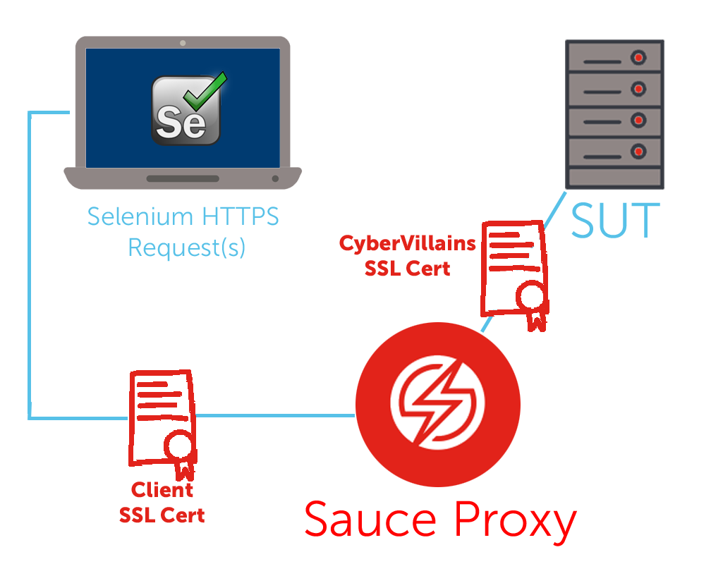
Sometimes companies use test environments that have self-signed or invalid SSL certificates. These certificates aren't trusted by stock browsers (such as those installed on Sauce Labs' infrastructure), so they will interrupt tests with security warnings, and Selenium won't or can't dismiss them. There's also the issue of trying accomodate every type of certificate for every type of browser for each user with a self-signed certificate. Now, some of you may find ways to automatically do this via a script, but in some cases this isn't feasible and then the user would have to wait for a Sauce Lab staff member to re-create the images before the tests could run.
So the way to combat this issue, is to use SSL Bumping, and the way it works is Sauce-Labs will re-sign certs by default. And the actual process works like this:
When Sauce Labs creates the VMs, it installs an SSL certificate that Sauce Labs controls, provided by a company called CyberVillians
When the Sauce Labs browser needs a resource, it requests it from the Sauce Connect server.
The Sauce Connect Proxy server passes that request to the Sauce Connect Proxy client, running on your user's side. ALL traffic between the client and server is then encrypted. The SSL traffic is encrypted twice; once by the original server, and again by Sauce Connect Proxy.
The Sauce Connect Proxy client then fetches the resource and returns it through an encrypted connection, to the Sauce Connect Proxy Server.
The Sauce Connect Proxy server then decrypts the traffic, and if it's SSL traffic, the server decrypts it a second time.
After processing the request, Sauce Connect Proxy then re-encrypts SSL traffic using the CyberVillians certificate, and sends the response to the browser.
Because the browser trusts the CyberVillians certificate, it will accept the traffic.
Disadvantages of SSL Bumping
Most stem from breaking the trust chain—-symptoms include:
504 HTTP Errors
WebSocket Failure
AJAX errors
Workarounds:
Public Address:
--direct-domains dancepants.com,*.mydomain.com,mysite.com
Private Address:
--no-ssl-bump-domains mydomain.com,saucelabs.com,mysite.com
-B #short flag
You may run into a situation where your HTTPS site won't load correctly or your tests will throw back 504 HTTP errors. This will often happen when your network components such as browsers and servers that use WebSockets, won’t work if the traffic to them has been altered, which Sauce Connect Proxy achieves with SSL Bumping.
SSL bumping can also affect sites that are highly dependent on AJAX.
There are two workarounds for these problems:
If you're site is publicly accessible you can run the direct domain command. Your requests will circumvent Sauce Connect Proxy to reach the site. If you're site is NOT publically accessible, then you can disable SSL Bumping using the --no-ssl-bump-domains argument when launching Sauce Connect Proxy or with the -B flag. Then your test traffic is no longer decrypted, and passes through directly to the browser running your tests along with the certificate of your SUT. However there is no silver bullet, after one of these two workarounds is achieved, SauceLabs will no longer cache resources so test execution will run slower. Also, if there are any underlying issues with the origin site’s SSL certificate, these may generate SSL errors that will interfere with test execution. So make sure you consult with you network admin if you're still having issues.
Sauce Connect Best Practices
Security/Networking
Designated Server
Firewall Rules
Intrusion Detection
Concurrency
Lab 1.0: Run a single tunnel
Configure a manual test using Sauce Connect
Lab Topics
manual test
configure/launch Sauce connect client
Check results in Sauce Labs
Sauce Virtual Machines
Here we will talk about how to configure your VMs to run Sauce effectively
Module Objectives
This module enables you to:
Set up Pre-run executables
Download apps to a VM
Specifically, we're going to talk about setting up pre-run executables that will automate some execution steps when we launch our Sauce VMs and Tunnel Vms. We will also briefly cover Sauce Storage which allows you to upload and download pertinent files that are necessary for your test cycle
Pre-Run Executables
A script that allows you to download assets, and configure browsers settings on Sauce VM prior to testing
Examples:
Set Window Preferences
Ignore Alert Messages
Install applications
So what is a pre-run executable exactly? Well, in it's simplest form, it is a script that you download to the Sauce Labs virtual machine and run prior to a test in order to change settings for Safari, Internet Explorer, or any other browser, or to configure the virtual machine specifications that your tests will run on.
The reason pre-run executables are important is because the zero point of truth for an end-user is often the browser on their local machine.
And unfortunatley for you the developer, there tends to be little to no uniformity amongst browsers--even if we're talking about the same version, because end users will often modify things on the client side to fit their needs with ad-ons, preferences, security settings and the like
. Also, problems with browser or virtual machine configurations can cause issues with your tests.
So it's a good practice to make changes to the browser and/or VM configuration before your test runs.
Pre-run executables allow us to configure browser profiles and settings on the actual test VMs.
For example, if we wanted to test against a security-conscious user profile that includes using incognito windows, pop up blockers, disabled JavaScript etc, we can set our pre-test to enable these user preferences. Another option is we can set browser settings to ignore alert messages and message dialogs that would normally cause our tests to fail.
Pre-run Configuration
The 'prerun' capability points to the public location of your resources (apps and/or scripts). Below is an example of ignoring a Safari warning pop-up
Shell script:
#!/bin/bash
defaults write com.apple.Safari WarnAboutFraudulentWebsites false
}
Test Script:
desired_capabilities['prerun'] = {
'executable':'http://myscriptstorage.com/disable_fraud.sh',
'background': 'false'
}
This example overrides the Safari browser preferences to ignore a security message so that a test doesn't fail. Steps to configure your pre-run executable
Write your script to reflect the changes you want to make to the browser or virtual machine configuration.
Put your script in a location where Sauce can access it.
For example, your script could be stored in GitHub or in Sauce Storage. You can also use Gist to easily host your executables.
Use the link pointing to the raw file contents.
In your test script, set the prerun capability to point to the location of your pre-run executable.
This example illustrates setting the prerun desired capability to point to myscriptstorage.com, where the disable_fraud.sh script used as an example is hypothetically located.
Silent Mode
Install executables without modal dialog messages
Syntax:
--silent #long
-S #abbreviated
Example:
"prerun": {
"executable": "http://url.to/your/executable.exe",
"args": [ "=sS", "-a", "-q" ],
"background": true,
"timeout": 120
}
If you have a large application to install or, an executable with a lot of steps, you can enable Sauce to install the executable wihtout any modal dialogs or installation process showing up in the test messages. Silent mode is an argument of the 'prerun' capability.
One of the arguments that can be added to the prerun capability in your test configuration options is --silent, which can be abbreviated to /S.
Downloading Files to Sauce VM
Pre-run scripts can download files from public location and upload to Sauce VMs prior to testing.
OS Support:
Mac OS X 10.6-10.10
Windows 7,8,8.1,XP
Linux
Linux Example: shell downloads to /tmp directory
#!/bin/bash
wget -O /tmp/file.txt http://mywebsite.com/file.txt
You can also create a pre-run executable script that will return the names and checksums of files that exist on Sauce Storage.
This topic contains examples of scripts for that purpose, based on the OS you are using for your tests, and how to configure the prerun capability in your tests to reference them.
Editing the Host File
Create host file for Sauce VM and load using 'prerun' in test script
Host File: (OS X example)
#!/bin/bash
echo "162.222.75.243 www.google.com" >> /etc/hosts
Test Script snippet:
self.desired_capabilities['prerun'] = {'executable':'https://githubUser/
master/EditDNS.sh', 'background': False }
Another way to configure a Sauce VM with a prerun executable is to actually edit the VM's host file. The use case for doing this is when your test's Selenium WebDriver tries to access a particular domain, like google.com for example...it will instead redirect to a new IP address like (saucelabs.com). As with other prerun configurations, the basic steps are:
Write a script with a URL redirect.
Upload the script to a publicly accessible location, (like GitHub or Sauce Storage)
Set the prerun capability in your test script to load the script as a host file in the Sauce Labs virtual machine.
Security and File Types
Who has access to VMs?
Who has access to the test?
Data Center Access?
VM Teardown Process?
Here are some FAQs that customers generally ask about in regards to the VM permissions and accessibility
Generally, the Sauce VMs aren't "open" beyond setting pre-run executables, and in terms of who has access to the Vms, only the test user should have access to upload, and download files and executables
In terms of who can provide access, that's generally the Job Owner, and he or she can grant access through the share functionality in SauceLabs
Now at an architectural level the only individuals who have access to the data center are SauceLab employees with proper clearance. And only the director of Operations or Engineering can provide access to the Data Center
The VMs themselves are created in memory and are decommisioned upon test completion. For example, once Sauce Connect is terminated (typically via ctrl-c), a call will be made from Sauce Connect to the REST API with instructions to terminate the tunnel VM. Sauce Connect will continue to poll the REST API until the tunnel VM has been halted and deleted
Lab 2.0: Setup Pre-Run Script
Set up some pre-run executables and run your test. Re-install your executable using the "slient" flag. View the logs and compare the output.
Lab Topics
Automatic test
CLI
Module Objectives
This module enables you to:
Administer basic API Interaction
Set Dashboards, capabilities, and rate limits
Update Sauce Job status reports
View, manage, and share archived test and build data
Here in this section we will dive into the specifics of the Sauce REST API and learn about the potential use cases as well as methods you can externally invoke in order to fit your test and business requrirements
API Overview
Accessed over HTTPS
Requests encoded via JSON
Standard HTTP Request Methods
Uses Basic HTTP Authentication
Supported API Clients
Generally the REST API must travel via an encrypted connection, and it is encoded via JSON.
It will only accept standards methods such as GET, POST, and PUT
And the connection uses Basic HTTP Authentication which involves using the credentials provided by your SauceLabs Account and Access Key.
The following Clients are supported and each have slight differences in terms of syntax and endpoint creation
For more details I recommend checking the REST API docs for the client you're most interested in, for today we're primarily going to cover the Java APIs
Use Cases
Build Naming
Results Sharing
Set "Pass/Fail" Conditions
Reporting
Temporary Storage
Some common use cases for wrestling with the Sauce REST API are to set your build details, sharing details, pass/fail conditions, and reporting details programmaticlly from external systems whether in a script or using a curl command from within a shell or terminal
Rate Limits
HTTP header used to prevent over-utilization of API calls. Enforced two ways:
Authenticated Users: Account Keys
Non-Authenticated Users: IP Address
To manually disable the rate limit:
$curl -X GET "https://saucelabs.com/rest/v1/hello" -H 'X-RateLimit-Enable: false' -i
API calls from external systems can often eat up alot of VM/system resources, so it's in our best interest to set our rate limites to prevent redundant and overflowing API calls.
We can throttle these calls one of two ways:
Only allowing authenticated users to make calls through their Sauce Login Credentials
Or to restrict API calls from specific IP addresses or ranges
If for whatever reason, we need to disable a rate limit, for example there's a one off call being made in a testing user, we can use a curl command with the following flags and then pass the X-RateLimit-Enable HTTP header with a value of false
Request Fields
Each API may have options to append parameters. For a full list consult the REST API documentation table for each method:
There are various Methods for specific aspects or behaviors of our test scripts that we can manipulate by making REST API calls. For example:
if you want to pull account information, or maybe you need specific details about a running job, or maybe you want to pull something from the Sauce Storage VM, or maybe you simply want visibility on all active connections or jobs that are currenly running. whatever the case may be, we've provided links to the docs which has a full list for each method, as well as examples and variations for request methods and the optional fields
Account Methods
Standard rest URL:https://saucelabs.com/rest/v1/
GET Methods:
#get user
users/:username
#get user concurrency
users/:username/concurrency
#get sub accounts
users/:username/list-subaccounts
#get sibling accounts
users/:username/siblings
#get sub accounts
users/:username/subaccounts
Account methods are useful to pull active SauceLab user or sub user details when a test is running
the following methods can not only display the account name, as well as any children account for that specific team, but we can also view the relative concurrency for a given user as well
Just a note, and this will repeat for the following slides, but when we want to access one of these REST methods, we can append these API calls to the standard endpoint at the top of this slide (highlight https://saucelabs.com/rest/v1/)
So here are the GET methods, we can use for the Account Method API which will:
Access basic account information Check account concurrency limits
Get a list of sub accounts associated with a parent account
Get a list of sibling accounts associated with provided account
Get information about a specific sub account
Account Methods
Standard rest URL:https://saucelabs.com/rest/v1/
POST Methods:
#creating a sub user account
curl https://saucelabs.com/rest/v1/users/YOUR_USERNAME \
-u YOUR_USERNAME:YOUR_ACCESS_KEY \
-X POST \
-H 'Content-Type: application/json' \
-d '{"username": "subaccount-username",
"password": "subaccount-password",
"name": "subaccount-name",
"email": "subaccount-email-address"}'
#Change access key
users/:username/accesskey/change
In terms of the Account API POST methods we can:
actually create a sub user account using the following flags
And change user access key during runtime
Now, these aren't all of the GET or POST methods, again for a full list consult the docs
Sauce Job Methods
Multiple Job Methods
High level metrics of jobs on a user basis
Sort jobs by duration or type
Single Job Methods
Stop currently running jobs based on ID
Acquire assets associated with a given job
These API calls allow you to access high level details about running or completed jobs on a user basis, or you can send API calls to stop a current job or retrieve assets from a given job
Multiple Job Methods
Standard rest URL:https://saucelabs.com/rest/v1/
:username/jobs #GET jobs
:username/jobs?limit=:number_of_jobs #GET number of jobs
:username/jobs?full=:get_full_info #GET Full jobs
:username/jobs?to=:time || from=:time #GET jobs within a time frame
:username/jobs?format=:job_format #GET jobs by specific format
If you want to affect multiple jobs using the API, the syntax requires specific arguments passed through the flags. For example:
If you want to get the last ten jobs ran by a give user you can type in: curl -u YOUR_USERNAME:YOUR_ACCESS_KEY \ https://saucelabs.com/rest/v1/YOUR_USERNAME/jobs?limit=10
If you want to get the full number of jobs ran to date, you can pass a boolean value as the job argument like so: curl -u YOUR_USERNAME:YOUR_ACCESS_KEY \ https://saucelabs.com/rest/v1/YOUR_USERNAME/jobs?full=true
And as another example, you can access jobs by format, or list the jobs that occured within a specific timestamp or duration
Single Job Methods
:username/jobs/:job_id #UPDATE or DELETE job
:username/jobs/:job_id/stop #Stop job
:username/jobs/:job_id/assets #GET or DELETE job asset names
:username/jobs/:job_id/assets/:file_name #GET job asset files
Here are the jobs to affect a single running job: edit or stop an existing job, edit job assets, or get the asset files
For example if you want to Edit an existing job, you can enter the following command: curl -u YOUR_USERNAME:YOUR_ACCESS_KEY \
-X PUT -H "Content-Type: application/json" \
-d '{"tags": ["testing-rest-api"], "name": "REST API Test",
"custom-data": {"source": "Testing REST API"}}' \
https://saucelabs.com/rest/v1/YOUR_USERNAME/jobs/YOUR_JOB_ID
JS Unit Testing
Start JS Testing
:username/js-tests
curl https://saucelabs.com/rest/v1/YOUR_USERNAME/js-tests \
-X POST \
-u YOUR_USERNAME:YOUR_ACCESS_KEY \
-H 'Content-Type: application/json' \
--data '{ "platforms": [["Windows 7", "firefox", "27"], ["Linux", "googlechrome", ""]], "url": "https://saucelabs.com/test_helpers/front_tests/index.html", "framework": "jasmine"}'Get JS Test Status
:username/js-tests/status
curl https://saucelabs.com/rest/v1/YOUR_USERNAME/js-tests/status \
-X POST \
-u YOUR_USERNAME:YOUR_ACCESS_KEY \
-H 'Content-Type: application/json' \
-d '{"js tests": ["JOB_ID_1","JOB_ID_2"]}'Start JS Testing: Start your JavaScript unit tests on as many browsers as you like with a single request. The custom framework checks window.global_test_results on the test page and uses whatever object supplied there to get test results.
Get Status: Get the status of your JS unit tests. The js test api is (required) beacause it defines an array of job ids which you would like the status of
Test (Single Job) Methods
Use the update_job method to set "Passed/Failed" test conditions in Sauce Labs
curl -X PUT \
-s -d '{"passed": true}' \
-u YOUR_USERNAME:YOUR_ACCESS_KEY \
https://saucelabs.com/rest/v1/YOUR_USERNAME/jobs/YOUR_JOB_ID
The update_job method is a Single Job PUT method that allows us to edit the existing job. There are a number of request fields that we can append to the API that will alter the behavior of the existing job such as:
name: [string] Change the job name
tags: [array of strings] Change the job tags
public: [string or boolean] Set job visibility to "public", "public restricted", "share" (true), "team" (false) or "private"
passed: [boolean] Set whether the job passed or not on the user end. In terms of marking test as pass or fail, this is one of the most important request fields to be aware of when using the update_job API calls to be aware of
build: [int] The build number tested by this test
custom-data: [JSON] a set of key-value pairs with any extra info that a user would like to add to the job. Note that the max data allowed is 64KB
Dashboards
Custom dashboards can utilize the REST API so that admins can perform test operations
Example:
eureQa By leverging front-end technologies like JavaScript, HTML, and CSS, we can create dashboards or visual plugins that can display our SauceLabs data in other systems. For example we can make WebService calls in Salesforce to display job information, or we can plug the JSON output into a dashboard like Splunk by using a GET Method. eureQA, is a strong use case and partner of this technology. For more information visit their webpage to see how they utilize SauceLabs REST API to make automated Salesforce testing more accessible and managible for Admins>
Real-time Job Activity
Get user information about concurrency, minutes, and jobs used.
curl -i https://saucelabs.com/rest/v1.1/users/:username/concurrency
{"timestamp": 1452260901.596546, "concurrency": {"self":
{"username": "YOUR_USERNAME", "current": {"overall": 0, "mac": 0, "manual": 0},"allowed":
{"manual": 100, "mac": 100, "overall": 100, "real_device": 30}},"ancestor":
{"username": "ANCESTOR_USERNAME", "current": {"overall": 0, "mac": 0, "manual": 0}, "allowed": {"manual": 100, "mac": 100, "overall": 100, "real_device": 30}}}}
Get information about concurrency, minutes and jobs used by the user over a specific duration (default 90 days). Concurrency is separated in mean and peak concurrency. The result shows real-time numbers in JSON format for the parent account and all of its sub-accounts. There is also a "totals" section at the end which tallies the numbers across all accounts.
Monitoring User Accounts
Retun JSON feed of running job counts broken down by account name and job status.
curl -i https://saucelabs.com/rest/v1.1/users/:username/activity
{
"subaccounts": {
"YOUR_USERNAME": {
"all": 30,
"in progress": 20,
"queued": 10,
},
"CHILD_USERNAME": {
"all": 15,
"in progress": 10,
"queued": 5,
},
},
"totals": {
"all": 45,
"in progress": 30,
"queued": 15,
}
}
Use the activity API to get currently running job counts broken down by account and job status. This example shows the number of jobs grouped by the job status for the requesting user and for its subaccounts. The response also includes a "totals" field that summarizes all the results
Sauce Storage
Eliminates network latency factor
Upload mobile apps, Selenium .jars, and prerun executables
/storage/:username/:file_name
Use the "overwrite=true" parameter to enable overwriting
curl -u YOUR_USERNAME:YOUR_ACCESS_KEY \
-X POST \
-H "Content-Type: application/octet-stream" \
https://saucelabs.com/rest/v1/storage/YOUR_USERNAME/test_file_name?overwrite=true \
--data-binary @PATH_TO_TEST_FILE
The storage API is a POST method that can upload a file to the temporary sauce storage. The storage will only retain the files for seven days and by default. By default, the REST API prevents overwriting files already stored in the temporary sauce storage. The overwrite=true query parameter in this example can be added to allow overwriting.
Get SC Tunnel Information
Standard rest URL:https://saucelabs.com/rest/v1/
:username/tunnels #returns response fields with tunnel info
#id
#owner
#status
#host
#creation_time
Getting a Tunnel (OS X Example):
curl https://saucelabs.com/rest/v1/YOUR_USERNAME/tunnels/
YOUR_TUNNEL_ID -u YOUR_USERNAME:YOUR_ACCESS_KEY
Deleting a Tunnel (Windows Example):
curl https://saucelabs.com/rest/v1/YOUR_USERNAME/tunnels/
YOUR_TUNNEL_ID -u YOUR_USERNAME:YOUR_ACCESS_KEY -X DELETE
The Tunnels GET method retrieves all running tunnels for a specific user and the Delete Tunnel method will shutdown a tunnel based on ID. In both cases you'll need to pass your user account and access key with the -u flag (-u YOUR_USERNAME:YOUR_ACCESS_KEY -X), or the tunnel won't shutdown
Lab 3.0: Display Accounts
In this lab we will:
Retrieve account information
Createa a sub account user
Display the full list of accounts
Lab 3.1: Monitor Job Activity
Set Job annotation using the REST API and run another test to output real time job activity
Get the tunnel information for that job
Lab 3.2: Sauce Storage
Using the "Upload File" method, upload the test assets into Sauce Storage. Then, use the "Get Stored Files" method to retrieve the same file.
Test Parallelization
Here we will discuss the differences between suite level vs. test case level, and other atomic testing practices
Module Objectives
This module enables you to:
Review the Java Test Framework
Explore using Sauce Runner with CI/CD
Understand the levels of parallelization
More specifically, this section of the course will give us a brief overview of the supported testing frameworks, and specifically we will review how the Java test framework operates. Then we will switch gears, and explore the Sauce Runner feature as well how it interfaces with CI/CD plugins. And finally we will discuss the hierarchy of parallelization.
Test Automation Frameworks
Java Frameworks:
JUnit
TestNG
Running tests in parallel can accelerate your team's development process and facilitate a continuous integration/continuous delivery pipeline. Sauce Labs provides many test frameworks with several scripts to demonstarte how to run tests in parallel. These scripts are set in an "AS-IS" state, meaning they're primarily function is to demonstrate the testing process and to provide a proof of concept within that framework.
Maven Test Runner
$ export SAUCE_USERNAME=#your Sauce Labs username
$ export SAUCE_ACCESS_KEY=#your Sauce Labs access key
$ mvn test-compile
$ mvn versions:display-dependency-updates
$ mvn test
After downloading the sample scripts in the Sauce Labs repo, ensure that Maven is installed, export your Sauce Credentials, and compile the project dependicies. Then run the test and check your Sauce Dashboard to see multiple tests running in parallel.
Lab 4.1: Run Maven Parallel Test
Download the sample files/pom.xml from this repo link. Run a Maven Test in your ReadyTech environments.
Lab Topics
Test Parallelization
TestNG
Sauce Runner
Facilitates Selenium test parallelization
Point to repo link where test is located
Select platform combinations
Run test
(Optional) Use REST API to run test from within CI/CD environment
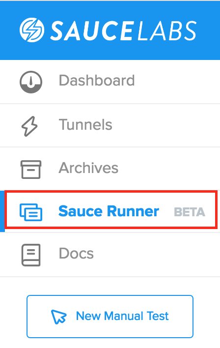
Sauce Runner facilitates server-side execution of your Selenium scripts, reduces latency, and allows Sauce Labs to automatically handle things like test parallelization and platform selection.
The way it works is you provide a link to the GitHub or Bitbucket repository where your tests are located, and select which platform and browser combinations you want to test against. You can even kick off the test suite from within your continuous integration environment by means of a REST API command that Sauce provides.
Configuring Your Repo
Repo must be configured so Sauce Runner can read it. See examples in repo for details.
language: "java"
maven-version: "3.1.1"
define:
invocationCount: 2
var2: "one two"
In order for Sauce Runner to run your tests, you must ensure that your repo is configured in such a way that Sauce Runner can read the repo. Sauce Labs have built examples for each of the supported languages and frameworks, which you can check out on Github. Edit the .yml files to set environment variables or pass sytem variables if you're running maven. The way that works is Sauce Runner leverages the Maven Surefire plugin and then you can define parameters in your .yaml file.
Creating a New Test Suite
Enter a Suite Name
Enter repo URL and branch
Enter Language
Select Browsers
Select OS
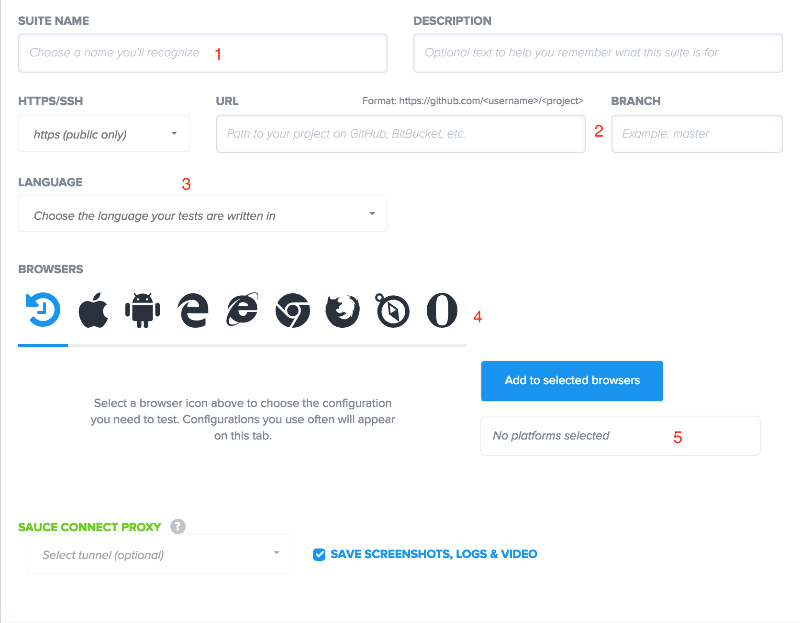
When entering your Repo URL and branch name that you have a deployment key if it's a private repository
Select the Language along with it's dependencies managers or any frameworks required
Select the types of browsers you want to test on. This will trigger a separate window that will display version numbers, screen resolutions, device types etc.
Next, select the platform OS then select add to selected browsers
If you're using Sauce Connect Proxy make sure to select the tunnel you want to use.
After you select Save, Sauce Runner will generate a YAML configuration file.
Running Your Test Suite
Download YAML
Add YAML to repo root
Run Test Suite
Review your Test Details
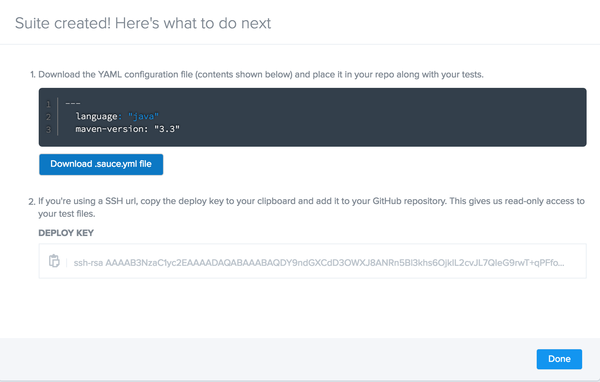
Download and add the YAML config to the root directory of your repository, and run the test within Sauce Labs to ensure it's desired capabilities. You can review the test status at the Sauce Labs Dashboard. Also if you're using a private repo you will need to add and commit your deployment key to your repo.
Lab 4.2: Run Test Suite
Clone the existing git repo provided by sauce labs into a local directory. Create a test suite, add the deployment key, and run the test.
Lab Topics
Test Suites
Parallelization
Using Sauce Runner with CI Platforms
Run your Test Suites from within your CI platform
Step one: Create a Build Step
(Depending on the platform, steps may be different)
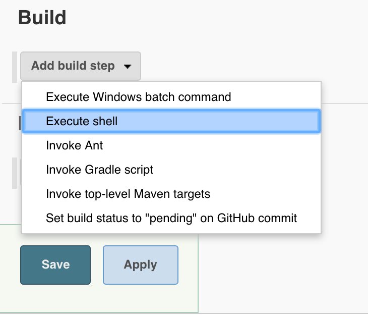
Depending on which CI plugin your using, the steps will be different, in this screenshot here, we're using the Jenkins plugin. And we're using the build step action in the project configuration screen, and we're going to execute this command through a shell.
REST Command
Step Two: Copy + Paste REST CURL Command
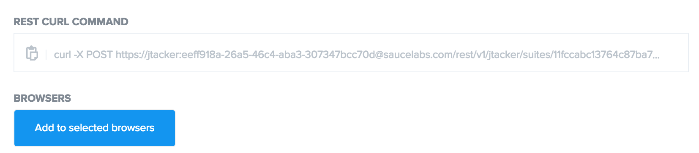
Once we've added the build step here, we can copy the curl command that is located in our test suite details page in SauceLabs.com and paste it into the build step shell action.
Example
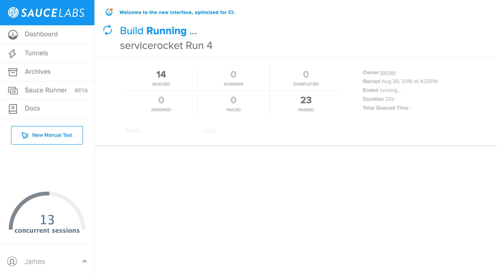
Build Running from Jenkins via REST CURL command
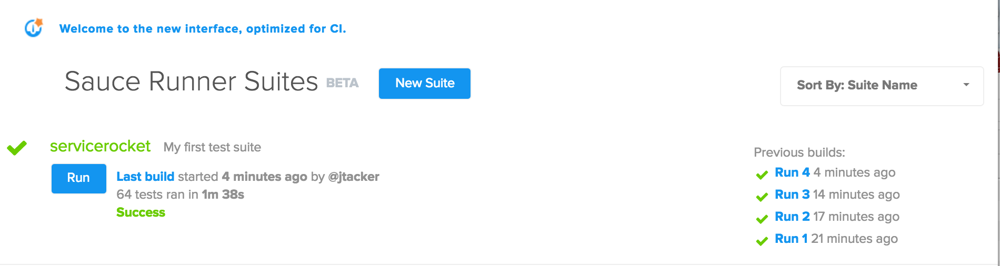
Finally, we can build the project from within Jenkins and switch back to SauceLabs.com and choose the SauceRunner tab. There we will see the active build running along with the concurrent connections. When the test completes, we will also see the results of the build, whether it was a success for failure and in the right hand side we can view the history of builds as well as their theri success or failure indicated by a check mark.
Small, Atomic, and Autonomous Testing
Small: Tests should be short and succinct
Atomic: Tests should focus on testing a single feature.
Autonomous: Tests should be independent of other tests.
Short - If you have a test suite of 100 tests running concurrently on 100 VMs, then the time it will take to run the entire suite will be determined by the longest/slowest test case. Keeping your tests small ensures that your suite will run efficiently and provide you with results faster.
Atomic - The test makes clear exactly what it is that you're testing. If the test fails, then you should also have a very clear idea of what needs to be fixed.
Autonomous - Tests should not be dependent on the results of one test to run successfully. In addition, an autonomous test should use its own data to test against, and not create potential conflicts with other tests over the same data.
Lab 4.3:Configure Sauce Runner with Jenkins
CI and CI Plugins
We'll discuss how to enable CI plugins.
Module Objectives
This module enables you to:
Understand the general purpose of CI/CD Pipeline
Explore the CI Plugins
Overview of CI/CD Pipeline
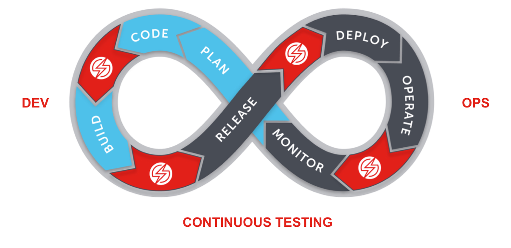
Continuous Integration/Continuous Development
Sauce Labs' value as a time saver is apparent even in its role in Continuous Integration and Delivery.
Traditionally, testing and QA are bottlenecks for application delivery and release. Writing automated tests, maintaining testing infrastructure, painful manual testing, all consume huge amounts of time. The work is never done either, because the product is always changing.
Sauce Labs takes away those worries though. With Selenium and Appium testing, we remove the barrier of time consuming test writing, and with Sauce Labs itself, we remove the need to have a propietary infrastructure. Sauce Labs provides the infrastructure for you, allowing you to test on a variety of platforms in a speedy manner. So you can focus on development, and releases, and leave the testing to Sauce Labs.
Sauce Labs reduces the pain of testing, so that instead of traditionally waiting until the end of the development life cycle to test, you can test iteratively, as you go through each step of development.
Available CI Plugins
TeamCity
Visual Studio
Bamboo
Bitbucket Pipelines
Jenkins
Benefits of CI Plugins
User interface to pass environment variables to tests
Automate launch and teardown process for Sauce Connect Proxy
Handle reporting throught SaucleLabs Test Publisher
Installing Sauce OnDemand
The Sauce OnDemand plugin allows user to populate environment variables on the Jenkins server that can be used in tests (e.g. Sauce USER and ACCESS_KEY) The plugin file is fairly large, so download may take several minutes.
In the plugin installation dialog, select Restart Jenkins when installation is complete and no jobs are running.
Configuring OnDemand
Pass Environment Variables
Set Authentication
Set Desired Capabilities
Set Jenkins Capabilities
(Optional) Change Binary Locations
(Optional) Enable Sauce Connect CLI options
The Jenkins plugin provides an interface for storing your Sauce Labs authentication credentials as environment variables on the Jenkins server, which is one of our best practices for testing with Sauce. This allows you to reference your credentials without having to hardcode them into your tests, and because the plugin manages authentication at the global level, you can have multiple jobs running at the same time that use these credentials.
Passing Environment Variables
SAUCE_USERNAME # user used for OnDemand
SAUCE_ACCESS_KEY # key used for OnDemand user
SAUCE_ONDEMAND_BROWSERS # JSON string representing Desired Browsers
SELENIUM_HOST # Host address of Selenium server
SELENIUM_PORT # Port address of Selenium server
These are some of the variables used for the OnDemand Jenkins plugin, We can specify the details of the actual Selenium grid by using SELENIUM_HOST and PORT. As well as the Sauce Access_key and Username to allow us to send REST calls during the build process.
Setting Authentication
Example:
WebDriver driver = new RemoteWebDriver(
new URL("http://"+System.getenv("SAUCE_USERNAME")+":"
+System.getenv("SAUCE_ACCESS_KEY")+"@ondemand.saucelabs.com:80/wd/hub",
desiredCapabilities);
In this example we're setting the authentication via our selenium script and referencing the environment variables we stored in Jenkins the using the Sauce OnDemand plugin.
Set Desired Capabilities in Test Script
Configure Variables in Test Scripts:
desiredCapabilities.setBrowserName(System.getenv("SELENIUM_BROWSER"));
desiredCapabilities.setVersion(System.getenv("SELENIUM_VERSION"));
desiredCapabilities.setCapability(CapabilityType.PLATFORM, System.getenv("SELENIUM_PLATFORM"));
Next we can set the capabilites again using the stored environment variables such as Selenium host, version, and even the desired browsers
Setting Capabilities for Jenkins
Configure a SAUCE_ON_DEMAND env variable if you plan on selecting multiple OS/browser combinations for your parrallel tests
Configure SELENIUM_PLATFORM, SELENIUM_VERSION, and SELENIUM_BROWSER for a single operating test.
So thus far we've set indivudal variables whenever we want to run one build with one platform/selenium host and port combo. But what if we want to run parrallel tests using different browser and OS combos? Here is where we use Sauce_On_demand variable where we specify these details in a list (next slide shows example).
Example
[
{
"platform":"LINUX",
"os":"Linux",
"browser":"firefox",
"url":"sauce-ondemand:?os=Linux&browser=firefox&browser-version=16",
"browserVersion":"16"
},
{
"platform":"VISTA",
"os":"Windows 2008",
"browser":"iexploreproxy",
"url":"sauce-ondemand:?os=Windows 2008&browser=iexploreproxy&browser-version=9",
"browserVersion":"9"
}
]
Here in our Sauce_on_demand varibable we're storing data for two separate platforms, and the inclusion of the Sauce_on_demand variable allows Jenkins to run these tests in parrallel during the build process
Configure SC Launch and Teardown
Extract SC binary
Change Global Default location
Change Per-Project Default location
Set SC Command Line Options
(Optional)Set Unique Tunnler Ids
Do not worry if your Jenkins server is behind a firewall because the Jenkins plugin for Sauce automatically installs Sauce Connect, but you will need to configure your project to use it. There are also global and per-project configuration options for Sauce Connect. The first step to running Sauce Connect with Jenkins is to enable it under the build environment settings under Sauce ondemand Support. There will be a checkbox that asks you to enable Sauce Connect. If the checkbox is selected, Sauce Connect will launch a new tunnel everytime you run a Jenkins build. Note that if you do run Sauce Connect then the Selenium HOST and PORT environment variables need to change to loclahost:4445
Changing the Binary Locations
Change Global Binary location
Click "Manage Jenkins" in Jenkins admin page.
Click "Configure System"
Navigate to the "Sauce Support" section
Edit location in "Sauce Connect Working Directory"
Per-project Binary location
Click "Configure"
Click "Advanced" in "Sauce Connect Advanced Options"
Editlocation in "Sauce Connect Working Directory"
When you run a Jenkins build with Sauce Connect enabled, the default behaviour of the plugin is to extract the Sauce Connect binary that is appropriate for your OS to your home directory. You can change the location where the plugin extracts Sauce Connect for specific projects, or at the global level for all projects. Note that Sauce Connect should always run on the same network as the site or application under test, but does not have to be on the same machine.
Set Sauce Connect CLI Options
Global
Click "Manage Jenkins" in Jenkins admin page.
Click "Configure System"
Navigate to the "Sauce Support" section
Edit CLI options in "Sauce Connect Options"
Per-Project
Click "Configure" in Jenkins project page
Click "Advanced" in "Sauce Connect Advanced Options"
Edit CLI options in "Sauce Connect Options"
There are also options to run Sauce Connect on a salve Jenkins node rather than a master node, as well as running a unique tunnel per Jenkins build. To achieve the later you just need to include the Tunnel identifer environment variable in addition to the Selenium HOST PORT variable
Setup Build Reporting
Depends on CI/CD plugin environment variables.
Successful build reporting depends on passing the correct environment variables to your CI/CD platform, and then setting their values. For a full list of environment variables used by the Jenkins plugin, consult the documentation
Build Capability
Set the build desired capability to the value of the JOB_NAME and BUILD_NUMBER environment variable. Like so:
DesiredCapabilities capabilities = new DesiredCapabilities();
// ...
capabilities.setCapability("build", System.getenv("JOB_NAME") + "__" + System.getenv("BUILD_NUMBER"));
Here we're grabbing the job-name and build-number as environment variables in our selenium script.
Marking Tests
In Jenkins, navigate to the "Post-Build Actions."
Select "Run Sauce Labs Test Publisher."
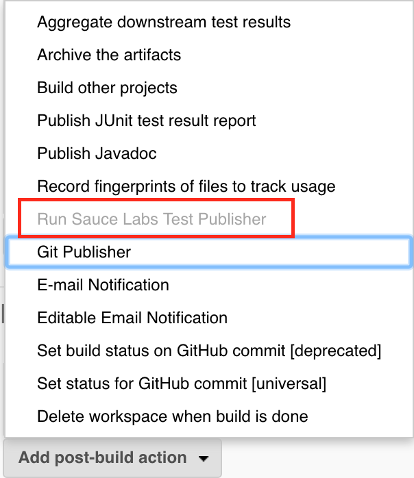
Once we've set those two environment variables and also set them in our test script, we can send the Jenkins build results to the Sauce Labs Test Publisher. Howerver, if you did not configure your build capability, or if you set the incorrect JOB_NAME and BUILD NUMBER in the previous step this option will appear grayed out like you see it here.
Pass Session ID to Jenkins
Sauce plugin parses test results file based on JOB_NAME
SauceOnDemandSessionID=session_id job_name=some_job_name
Obtain session ID and ouptut to Jenkins via stdout
private void printSessionId() {
String message = String.format("SauceOnDemandSessionID=%1$s job-name=%2$s",
(((RemoteWebDriver) driver).getSessionId()).toString(), "some job name");
System.out.println(message);
}
As part of the post-build activities, the Sauce plugin will parse the test result files in an attempt to associate test results with Sauce jobs. It does this by identifying lines in the stdout or stderr that have this format:
The session id can be obtained from the RemoteWebDriver instance and the job-name can be any string, but is generally the name of the test class being executed.
To make sure that your test results and Sauce jobs are associated properly, you need to output the session id to stdout. For example, this is the code you would use to output the session id to the Java stdout.
Lab 5.0: Sauce OnDemand
Configure Sauce Connect on Jenkins
Run a test using the Jenkins Pipeline
Testing Techniques: Best Practices
General best practices, testing methodology
Module Objectives
This module enables you to:
Understand testing strategies that can help you set up your automated testing
Label, name and tag your tests to faciliate searching for past tests on Sauce Labs
Different Kinds of Tests
Functional Testing
Test a functionality or feature of your application's that results in a pass or a failure. Performance Testing
Performance tests gauge and output performance metrics for your application.
Functional testing is what Sauce Labs offers to help faciliate and simplify for it's users.
Performance testing serves to answer questions suchas, can your application server handle a particular load, and does it behave as expected when you push it to its limit? These types of tests are better undertaken with a testing infrastructure that has been specifically developed for performance testing, so all baseline performance metrics are well established and understood before you start the test.
Some eaxmples of performance testing helpers (similar to sauce labs):
Checking Network Connectivity
Use the following commands to confirm if Sauce Connect can access saucelabs.com
ping command
$ ping saucelabs.com
telnet command
$ telnet saucelabs.com 443
curl command
$ curl -v https://saucelabs.com/
If you know of the existence of a proxy but you aren't sure about the security configurations, you need to make sure that saucelabs.com is accessible from the machine running Sauce Connect. This can be tested by issuing a ping, telnet, or cURL command to saucelabs.com from the machine's CLI. If any of the commands fail, work with the internal network team to troubleshoot and resolve the issue.
Parallelization
Avoid dependencies between tests
If you chain tests together, when one at the top fails, then they will all fail. Use Frameworks
Frameworks include helpful libraries and functionality that can help you make the most of parallelization.
Running tests in parallel is the secret Sauce for accelerating your development process and creating a continuous integration/continuous delivery pipeline.
One of the main features that Sauce Labs offers is parallelization, the ability to run serveral scripts at once on a variety of platforms. Since tests and commands are sent remotely, these tests take longer to run individually, but with parallelization, we can run them all at once. That is, we can start them all at the same time, which cuts down on the total time tests would normally take, saving time and money for your teams and business.
It's good to avoid dependencies between tests. This goes along with the atomic testing strategy, where we want to create autonomous tests, so that they don't depend on each other, and when one fails, then we know exactly what failed.
Parrallelization with CI/CD Plugins
Check the documentation for best practices for a given platform. Using Jenkins as an example:
Configure test scripts according to best practices
Setup Jenkins to run as a Matrix project
Configure Jenkins build as a Parameterized Build
Label Your Tests
ID tests
Name tests
Apply build names to tests
caps.setCapability("tags","tag_awesome");
caps.setCapability("build","cool_builds1");
caps.setCapability("name","Java Remote Sample Test");
Docs: Test Configuration Options
Lab: Labelling and Naming our Tests
This is the lab where we apply labels to our test, run it again, and see the label appear in sauce labs
There's also a way to set your own build number as well
The Doctor flag
The --doctor flag, helps debug problems with Sauce Connect Proxy
"failed to fetch PAC file ...: ..."
"invalid REST URL ..."
"can't resolve 'saucelabs.com'/... tunnel hostname(s) via any DNS server"
Full list of errors and solutions
--doctor is a command line utility that you can use to diagnose issues with Sauce Connect Proxy. The doctor flag can detect errors such as failing to download the PAC file, there are invalid REST endpoints, any firwewall or DNS setting errors.